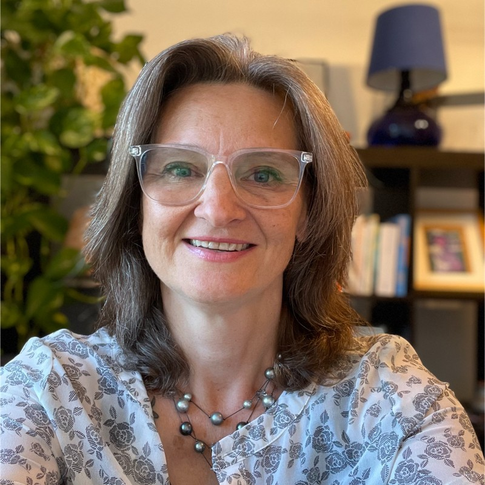

Founder & Independent Consultant
2025 – PresentPelagos Global
- Independent consulting in global healthcare intelligence, aeromedical and medical-logistics strategy, and duty of care.

Global Healthcare Intelligence & Aeromedical Consultant · Pelagos Global
International health assistance leader with 30+ years in healthcare intelligence, medical logistics and aeromedical transport. For nine years Director, Global Solutions Healthcare Intelligence at UnitedHealthcare Global, leading the global medical and transport provider quality assessment program and country health surveillance for globally mobile customers. Chair of the EURAMI Ethics Committee. Now independent, helping insurers, assistance companies, employers, universities and NGOs build safer, better informed duty-of-care programs.
Pelagos Global
UnitedHealthcare Global · United States (remote)
UnitedHealth Group
FrontierMEDEX (acquired by UnitedHealthcare)
GlobalCare, Inc. (now Zelis)
Médecins du Monde · Iquitos, Peru
Tip: in the print dialog choose “Save as PDF”, A4, and enable background graphics for best results.